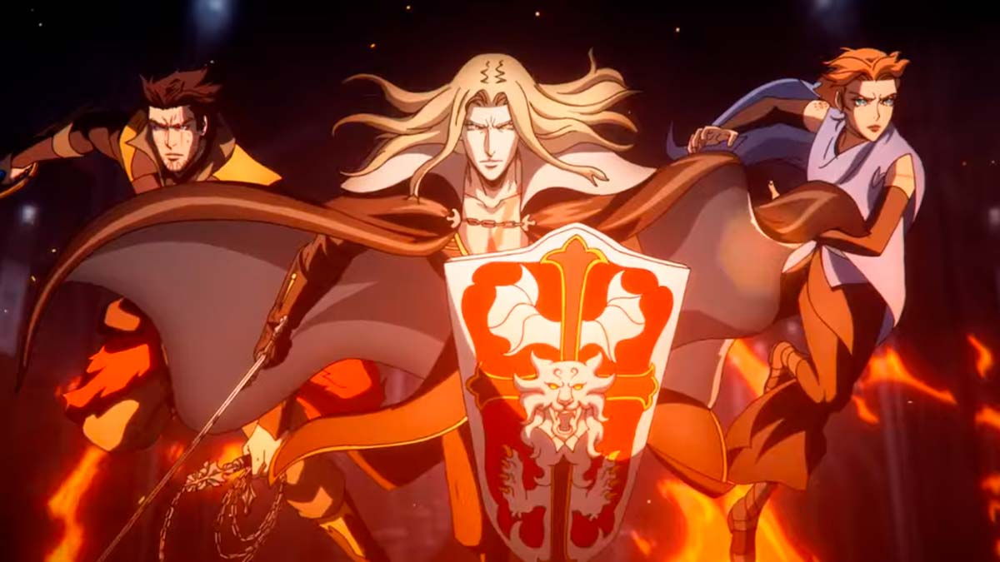
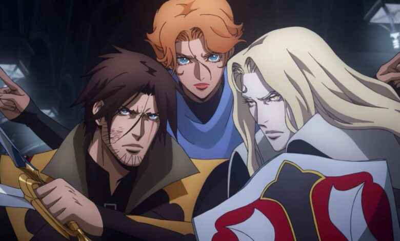
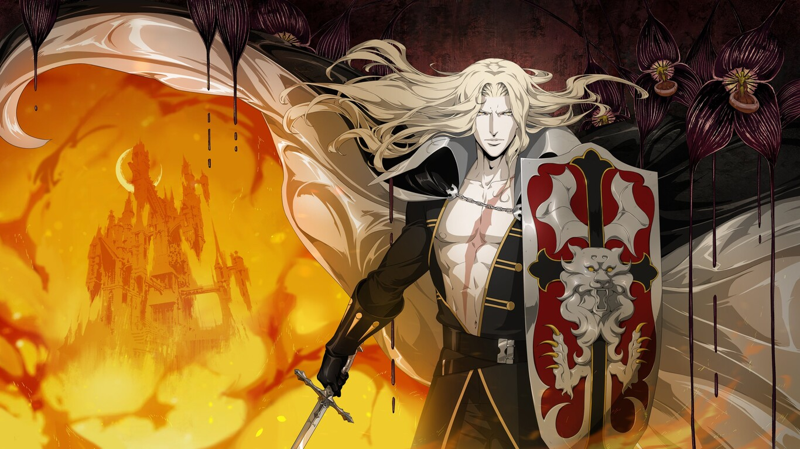

Drácula es el personaje más fuerte de Castlevania y el principal antagonista de la serie.
Después de que mataron a su esposa humana, juró vengarse del mundo y casi logró cumplir su plan.
Gracias a la Crimson Stone, fue que obtuvo sus poderes para armar un ejército de abominaciones en busca de acabar con la raza humana.
Dracula es el jefe final de casi todos los Castlevania a excepción de Lament of Innocence, Aria of Sorrow y
Dawn of Sorrow.
Last updated 3 mins ago
Trevor, el último descendiente de la familia Belmont, es el protagonista de Castlevania y un cazador de vampiros.
Después de que su familia fue asesinada y condenada injustamente, dejó la propiedad y regresó después de volverse extremadamente poderoso.
Su dominio de las artes marciales y su físico superior lo ayudaron a superar muchas situaciones peligrosas. y le permitió pelear incluso con Alucard, cuando este último insistió en probarlo.
A pesar de no poseer magia, Trevor jugó un papel importante en la derrota de Drácula, y en el juego, fue el primer Belmont en matarlo.
Last updated 3 mins ago
Con su herencia vampírica, Alucard tiene acceso a poderes sobrenaturales, así como a la empatía humana.
Con habilidad de otro mundo como fuerza, levitación, telequinesis, cambio de forma y velocidad, pocos oponentes pueden
enfrentarlo y vivir para contarlo.
Alucard también es un artista marcial excepcional, que se vio cuando logró lanzar ataques contra Drácula.
Incluso fue capaz de luchar contra Trevor hasta empatar mientras mostraba su espectacular habilidad con la espada.
Con su nivel casi genial de intelecto y fuerza superior, se asoció con Sypha y Trevor para asestar el golpe mortal a su padre..
Last updated 3 mins ago
Sypha Belnades es la nieta del Anciano de los Oradores y una hechicera elemental.
Esto significa que ella es capaz de manipular y crear cualquier elemento desde cero, lo que la
convierte en una maga inmensamente poderosa.
En la serie ella fue capaz de despachar a los monstruos de Drácula sin esfuerzo e incluso quemó vivo a
uno de sus generales con un ligero toque de su mano. También la vimos usando hielo para crear escudos
y torbellinos para arrojar a sus enemigos lejos.
Last updated 3 mins ago
A lo largo de la segunda y tercera temporada, Carmilla demostró ser un personaje astuto y manipulador que quería convertirse en un gobernante vampiro como ningún otro. Acompañada por su Consejo de Hermanas, incluso estuvo cerca de convertir los pueblos y ciudades vecinas en un suministro inagotable de alimentos para ellos.
Last updated 3 mins ago
Isaac desarrolló un odio y un resentimiento profundo, frío e insensible por la humanidad después de la crueldad con la que ha sido tratado desde la infancia, como un esclavo, nada menos. Ciertamente estaba entre los más inteligentes y calculadores de la Corte de Drácula, y era una fuerza a tener en cuenta incluso contra los vampiros.
Last updated 3 mins ago
Last updated 3 mins ago
Last updated 3 mins ago
Last updated 3 mins ago
Last updated 3 mins ago
Last updated 3 mins ago
Last updated 3 mins ago